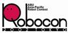
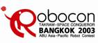
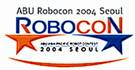
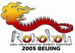
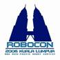
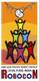
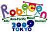
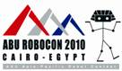
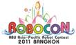
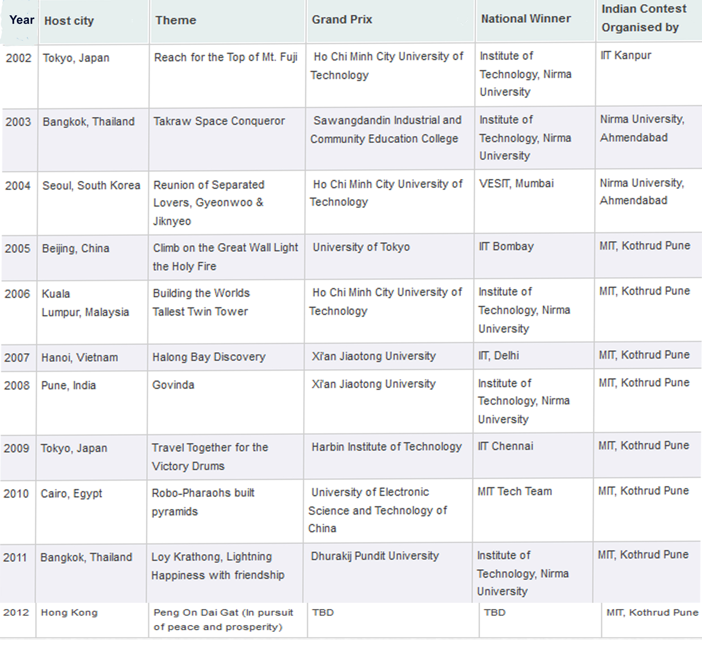

History of ABU Robocon
| Year & Host City/Country | Logo | Theme | ABU Winner | National Winner | Indian Contest Organised by |
| 2002 Tokyo, Japan |  | " Reach for The Top of Mt.Fuji" | Ho Chi Minh City University of Technology, Vietnam | Institute of Technology, Nirma University | IIT Kanpur |
| 2003 Bangkok, Thailand |  | "Takraw Space Conqueror" | Sawangdandin Industrial and Community Education College, Thailand | Institute of Technology, Nirma University | Nirma University, Ahmendabad |
| 2004 Seoul, Korea |  | "Reunion of Separated Lovers, Gyeonwoo & Jiknyeo" | Ho Chi Minh City University of Technology, Vietnam | VESIT, Mumbai | Nirma University, Ahmedabad |
| 2005 Beijing, China |  | “Climb on the Great Wall Light the Holy Fire” | The University of Tokyo, Japan | IIT Bombay | MIT, Kothrud Pune |
| 2006 Kuala Lumpur, Malaysia |  | “Building the World’s Tallest Twin Tower” | Ho Chi Minh City University of Technology, Vietnam | Institute of Technology, Nirma University | |
| 2007 Hanoi, Vietnam | “Halong Bay Discovery” | XI an Jiaotong University, China | IIT, Delhi | ||
| 2008 MIT Pune, India |  | “Govinda Touch the Sky” | XI an Jiaotong University, China | Institute of Technology, Nirma University | |
| 2009 Tokyo, Japan |  | “Travel Together for the Victory Drums” | Harbin Institute of Technology, China | IIT Chennai | |
| 2010 Cairo, Egypt |  | “Robo-Pharaohs Build Pyramids” | University of Electronic Science and Technology of China, China | MIT Pune | MAE, Alandi Pune |
| 2011 Bangkok, Thailand |  | “Lay Krathong, Lighting Happiness with Friendship” | Dhurakij Pundit University Thailand | Institute of Technology, Nirma University | |
| Hongkong (Scheduled on 19th August 2012) | “In Pursuit of Peace and Prosperity” | University of Electronic Science and Technology of China, China | MAEER's MIT, Pune | ||
| Vietnam (Scheduled on 18th August 2013) |  |
“The Green Planet” | Scheduled on 18th August 2013 | Scheduled on 7th to 9th March 2013 |
ABOUT ABU ROBOCON
The Asia-Pacific Robot Contest (ABU Robocon) is an Asian Oceanian College robot competition, founded in 2002 by Asia-Pacific Broadcasting Union. In the competition robots compete to complete a task within a set period of time. The contest aims to create friendship among young people with similar interests who will lead their countries in the 21st century, as well as help advance engineering and broadcasting technologies in the region. The event is broadcast in many countries through ABU member broadcasters.
Each year the competition has different topics, but generally speaking three or more robots must be used to complete the tasks. The best robots usually weight more than 10kg and span in one square meter area. To build the robots, contestants, who are restricted to be undergraduate students, must possess rich knowledge in programming, mechanical design and electronic circuit design.
History of ABU ROBOCON
